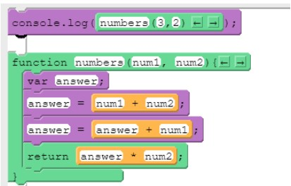
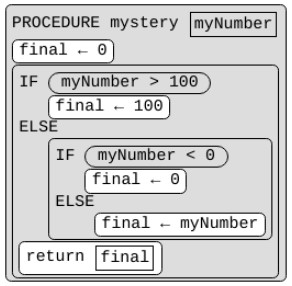
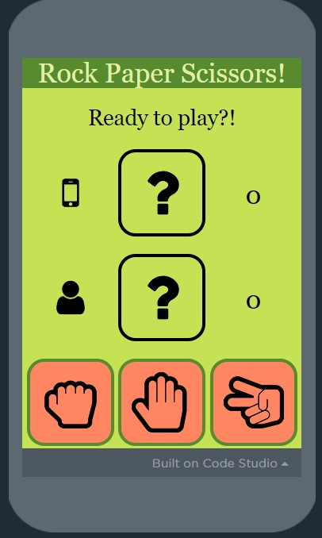

Lesson 1: Parameters and Return Explore
Summary: In Lesson#1, we learnt how functions can be generalized using parameters and return values. A argument is the value passed to the parameter. A parameter is a variable in a function definition. It is used as a placeholder for values that will be passed through the function. The Return command is used to return the flow of control to the point where the procedure(aka function) was called and return to the value of expression.
CFU: What will print to the console after running this code segment?

Answer: 16
Lesson 2: Parameters and Return Investigate
Summary: In Lesson#2, we investigated and modified sample apps that use parameters and return values.
CFU: What are the benefits of writing functions that use parameters and return? Try to list at least two.
Answer: Writing functions that use parameters and return helps improve code readability and manages complexity by reusing code. Instead of writing two separate functions, it is possible to combine the two by using parameters. The debugging process is much easier with parameter and returns.
Lesson 3: Unreasonable Time
Summary: We practice programming and debugging with parameters and return values through a set of programming puzzles.
CFU: The procedure below will be called twice with two numbers provided as arguments to the parameter myNumber. Which of the following pair of numbers will mystery return the same value?

Answer: 100 and 200
Lesson 4: Parameters and Return Make
Summary:In Lesson#4, we debugged an app that uses functions with parameters and return.
CFU: We analyzed, and replicated a Reminder App by trying to coding the app from scratch.

.jpg)